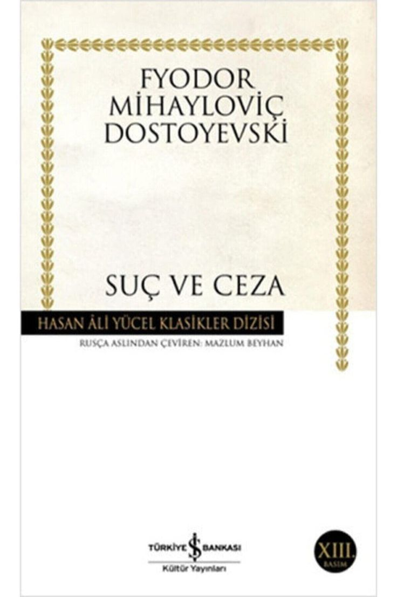
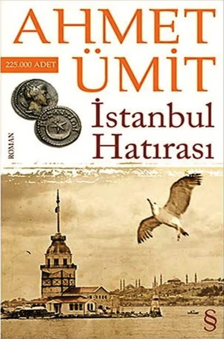
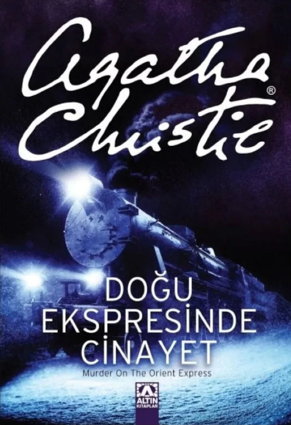

Hukuk eğitimini yarıda bırakan fakir genç Raskolnikov, toplumun iyiliği için "kötü birinin" öldürülmesinin kabul edilebilir olduğu düşüncesine kapılır. Bu felsefeyle yaşlı bir tefeciyi öldürür ancak olay sırasında hiç suçu olmayan bir kadını da katletmek zorunda kalır. Kimse onu görmese de, Raskolnikov korkunç bir vicdan azabı ve kaygı içine düşer. Hayatındaki fedakâr kadın Sonia’nın desteğiyle suçunu itiraf eden genç adam, Sibirya’ya sürgüne gönderilir. Eser, işlenen bir suçun ardından gelen asıl cezanın, insanın kendi vicdanında verdiği savaş olduğunu sarsıcı bir dille anlatır.

Başkomiser Nevzat, yardımcıları Ali ve Zeynep ile birlikte Sarayburnu’ndaki Atatürk heykeli önünde bulunan bir cesedi incelemekle görevlendirilir. Ancak bu olay, kısa sürede İstanbul'un yedi tepesine ve yedi tarihi eserine yayılan bir dizi cinayete dönüşür. Her kurbanın avucunda, İstanbul’un farklı dönemlerine (Byzantion gibi) ait antik sikkeler bulunmaktadır ve cesetlerin elleri bir sonraki kurbanın yerini işaret etmektedir.
Profesörden belediye başkan yardımcısına kadar uzanan kurban listesini araştıran Nevzat, katilin sadece can almadığını, aynı zamanda şehirden intikam aldığını fark eder. Soruşturma ilerledikçe, cinayetlerin arkasındaki faillerin aslında en yakınlarında olduğu gerçeğiyle yüzleşirler. Kendi ailesinin ölümüne sebep olanlardan intikam almak isteyen bir polisin trajik hikayesini konu alan roman, okuyucuyu İstanbul’un kadim tarihi ile modern suç dünyası arasında gizemli bir yolculuğuna çıkarır.

İstanbul’daki Pera Palas Otel’de kaleme alınan bu ölümsüz eser, Ortadoğu’dan yola çıkan lüks Doğu Ekspresi’nde geçer. Şiddetli kar yağışı nedeniyle tren raylarda mahsur kaldığı sırada, Amerikalı bir yolcu kompartımanında bıçaklanarak öldürülmüş halde bulunur. Kapının içeriden kilitli olması ve kurbanın geçmişteki karanlık "Armstrong" davasıyla bağlantısı, olayı tam bir bilmeceye dönüştürür.
Trende bulunan dahi dedektif Hercule Poirot, pasaportları inceleyip ifadeleri alarak soruşturmaya başlar. Bazı yolcuların izleri yok etme ve dikkat dağıtma çabalarına rağmen Poirot, keskin zekasıyla cinayeti aydınlatır. Romanın sonunda Poirot, kehanet sayılabilecek bir öngörüyle olayı bir değil, tam iki farklı şekilde çözerek okuyucuyu hayrete düşüren o tarihi finale imza atar.